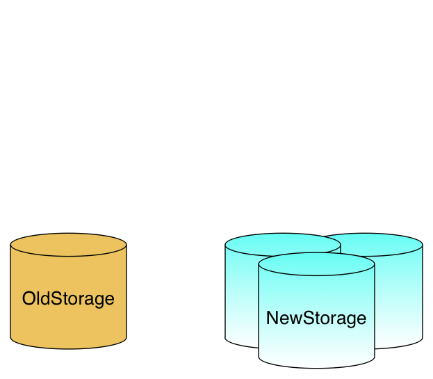
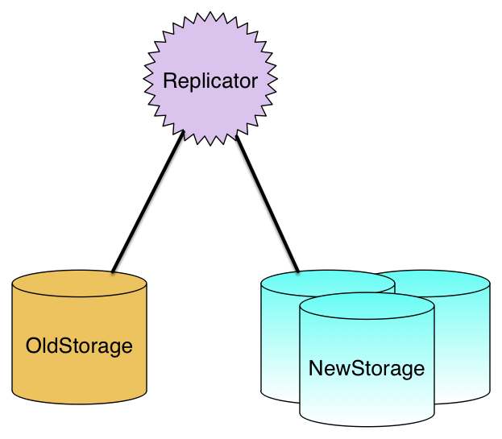
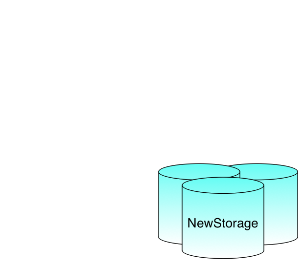

class: center, middle, inverse # A Quick iRODS Demo <br ><br ><br > [Renaissance Computing Institute (RENCI)](http://www.renci.org) <br ><br > Summer 2014 Edition --- # About this Demo... This is a demonstration of some key features of iRODS. <br><br>It uses a set of two virtual machines, representing two separate administrative zones: "zoneA" and "zoneB". <br><br>Each zone has a single user: "alice" on zoneA and "bobby" on zoneB. --- # About this Demo... This is a demonstration of some key features of iRODS. <br><br>For the sake of the demonstration, command-line operations are scripted using PHP. <br><br>Scripted operations will open a new tab in your browser, execute, and then close the new tab. --- # About this Demo... This is a demonstration of some key features of iRODS. <br><br>We also use a graphical web client, iDrop Web, in this demonstration. iDrop Web links will also open in a new tab. --- # About this Demo... This is a demonstration of some key features of iRODS. <br><br>Before we get started, we need to reset the iRODS installation on each virtual machine. <br><br>(Resetting clears the underlying database and runs a setup script. It takes about 30 seconds for each system.) <br> ### Let's get started! <br><a href="http://template.example.org:7080/reset_zoneA.php" target="_blank">Reset Zone A</a> <a href="http://template.example.org:9080/reset_zoneB.php" target="_blank">Reset Zone B</a><br><br> --- class: middle, center, inverse #What is iRODS? --- class: center #iRODS is...<br> -- open source middleware<br> -- for data discovery,<br> -- workflow automation,<br> -- secure collaboration,<br> -- and data virtualization. --- # iRODS is for data discovery. Files in iRODS can be "tagged" with metadata. -- <br><br>Metadata can be automatically applied or user-generated. -- <br><br>This allows users to find files easily. -- <br><br>Or to track processing steps applied to a file. -- <br><br>Or to apply and use any related information not included in the file. --- # iRODS is for data discovery. Files in iRODS can be "tagged" with metadata. <br>Administrators can use metadata to control policy. -- <br><br>Like archiving and access control policies. --- # Demo: iRODS is for data discovery. -- iRODS user "alice" has added several image files with metadata tags. <br><a href="http://template.example.org:7443/idrop-web2" target="_blank">Log in to iDrop Web</a> <br><a href="http://template.example.org:7443/idrop-web2/tags/index" target="_blank">Explore tags with iDrop Web</a> ??? # Demo 2 of 4: iRODS is for workflow automation. When a file is uploaded, a thumbnail is created. <br><br><a href="http://template.example.org:7080/thumbnails" target="_blank">Thumbnails</a> (This Does Not Work Yet) --- # iRODS is for secure collaboration. The administrator of a zone can permit users from another zone to access files in his zone. -- <br><br>Authentication takes place on the user's home zone. --- # iRODS is for secure collaboration. Users access shared and local files from the same interface. -- <br><br>The shared files and the local files look and act the same. --- # iRODS is for secure collaboration. Because authentication occurs locally, zone administrators can permit sharing without giving up control. --- # Demo: iRODS is for secure collaboration. This process is called federation. -- <br><br>Each administrator shares a zone key that is placed in a configuration file. -- <br><br>Then, a few iRODS commands tell each zone about the other zone and permitted users. ```bash # on zoneA (1247 is the default iRODS tcp port) iadmin mkzone zoneB remote irodsb.irods-demo.dev.docker:1247 # on zoneB iadmin mkzone zoneA remote irodsa.irods-demo.dev.docker:1247 iadmin mkuser alice#zoneA rodsuser ``` -- .center[<br><a href="http://template.example.org:7080/federate_zoneA.php" target="_blank">Enable Federation A->B</a> <a href="http://template.example.org:9080/federate_zoneB.php" target="_blank">Enable Federation B->A</a> <br><br><a href="http://template.example.org:7443/idrop-web2/browse/index#treeView=path&treeViewPath=/&absPath=/zoneB/home/bobby/images/&browseOptionVal=info" target="_blank">iDrop Web</a>] --- # iRODS is for data virtualization. iRODS virtualizes data storage resources. --- # iRODS is for data virtualization. iRODS virtualizes data storage resources. <br>Users get a consistent interface to different file systems, NFS mounts, Amazon S3 buckets... and many other data containers. --- # iRODS is for data virtualization. iRODS virtualizes data storage resources. <br>Administrators control access and automate processes through a consistent interface. --- # iRODS is for data virtualization. iRODS virtualizes data storage resources. <br>"Composable resources" make it easy to distribute and replicate data to multiple resources. -- <br><br>Now, it's easy to migrate data between equipment. -- ###.red[.center[You are no longer subject to storage vendor lock-in.]] --- # Demo: iRODS is for data virtualization. In this demonstration, OldStorage is our legacy filestore, and NewStorage is our new storage resource. .center[<br>] ```bash iadmin mkresc NewStorage unixfilesystem $Hostname/$NewPath iadmin mkresc Replicator replication iadmin addchildtoresc Replicator OldStorage iadmin addchildtoresc Replicator NewStorage iadmin modresc Replicator rebalance iadmin rmchildfromresc Replicator OldStorage iadmin rmchildfromresc Replicator NewStorage iadmin rmresc Replicator itrim -rM -N 1 -S OldStorage /zoneA iadmin rmresc OldStorage ``` --- # Demo: iRODS is for data virtualization. First, we tell iRODS about NewStorage. <br><br> .center[<br>] ```bash *iadmin mkresc NewStorage unixfilesystem $Hostname/$NewPath iadmin mkresc Replicator replication iadmin addchildtoresc Replicator OldStorage iadmin addchildtoresc Replicator NewStorage iadmin modresc Replicator rebalance iadmin rmchildfromresc Replicator OldStorage iadmin rmchildfromresc Replicator NewStorage iadmin rmresc Replicator itrim -rM -N 1 -S OldStorage /zoneA iadmin rmresc OldStorage ``` --- # Demo: iRODS is for data virtualization. Next, we set up a replication resource, Replicator, and build a tree with OldStorage and NewStorage. .center[<br>] ```bash iadmin mkresc NewStorage unixfilesystem $Hostname/$NewPath *iadmin mkresc Replicator replication *iadmin addchildtoresc Replicator OldStorage *iadmin addchildtoresc Replicator NewStorage iadmin modresc Replicator rebalance iadmin rmchildfromresc Replicator OldStorage iadmin rmchildfromresc Replicator NewStorage iadmin rmresc Replicator itrim -rM -N 1 -S OldStorage /zoneA iadmin rmresc OldStorage ``` --- # Demo: iRODS is for data virtualization. Then, we "rebalance" to synchronize files across the tree. <br> For replication resources, "rebalance" means "replicate". <br> .center[<br>] ```bash iadmin mkresc NewStorage unixfilesystem $Hostname/$NewPath iadmin mkresc Replicator replication iadmin addchildtoresc Replicator OldStorage iadmin addchildtoresc Replicator NewStorage *iadmin modresc Replicator rebalance iadmin rmchildfromresc Replicator OldStorage iadmin rmchildfromresc Replicator NewStorage iadmin rmresc Replicator itrim -rM -N 1 -S OldStorage /zoneA iadmin rmresc OldStorage ``` ??? Rebalance is a generic function name that applies differently to each different type of composable resource (e.g., tiering resources, performance-optimized resources). --- # Demo: iRODS is for data virtualization. Now that we've rebalanced, we can dismantle the tree. <br><br> .center[<br>] ```bash iadmin mkresc NewStorage unixfilesystem $Hostname/$NewPath iadmin mkresc Replicator replication iadmin addchildtoresc Replicator OldStorage iadmin addchildtoresc Replicator NewStorage iadmin modresc Replicator rebalance *iadmin rmchildfromresc Replicator OldStorage *iadmin rmchildfromresc Replicator NewStorage *iadmin rmresc Replicator itrim -rM -N 1 -S OldStorage /zoneA iadmin rmresc OldStorage ``` --- # Demo: iRODS is for data virtualization. And finally, we can repurpose OldStorage. <br><br> .center[<br>] ```bash iadmin mkresc NewStorage unixfilesystem $Hostname/$NewPath iadmin mkresc Replicator replication iadmin addchildtoresc Replicator OldStorage iadmin addchildtoresc Replicator NewStorage iadmin modresc Replicator rebalance iadmin rmchildfromresc Replicator OldStorage iadmin rmchildfromresc Replicator NewStorage iadmin rmresc Replicator *itrim -rM -N 1 -S OldStorage /zoneA *iadmin rmresc OldStorage ``` --- # Demo: iRODS is for data virtualization. <br> .center[<a href="http://template.example.org:7080/migrateoldnew_zoneA.php" target="_blank">Migrate from OldStorage to NewStorage</a> <br><br><a href="http://template.example.org:7443/idrop-web2/browse/index#treeView=detect&treeViewPath=&absPath=/zoneA/home/alice/images/ddn.jpg&browseOptionVal=info" target="_blank">iDrop Web</a> <br><br><a href="http://template.example.org:7080/migratenewold_zoneA.php" target="_blank">Migrate from NewStorage to OldStorage</a> <br><br><br><br>] ```bash iadmin mkresc NewStorage unixfilesystem $Hostname/$NewPath iadmin mkresc Replicator replication iadmin addchildtoresc Replicator OldStorage iadmin addchildtoresc Replicator NewStorage iadmin modresc Replicator rebalance iadmin rmchildfromresc Replicator OldStorage iadmin rmchildfromresc Replicator NewStorage iadmin rmresc Replicator itrim -rM -N 1 -S OldStorage /zoneA iadmin rmresc OldStorage ``` --- class: center #iRODS is...<br> open source middleware<br> for data discovery,<br> workflow automation,<br> secure collaboration,<br> and data virtualization. --- class: center, middle <a href="http://irods.org"><img src="slide_images/iRODS-Logo.png" width=40%></a> <br><br><br><br> ##Thank you!